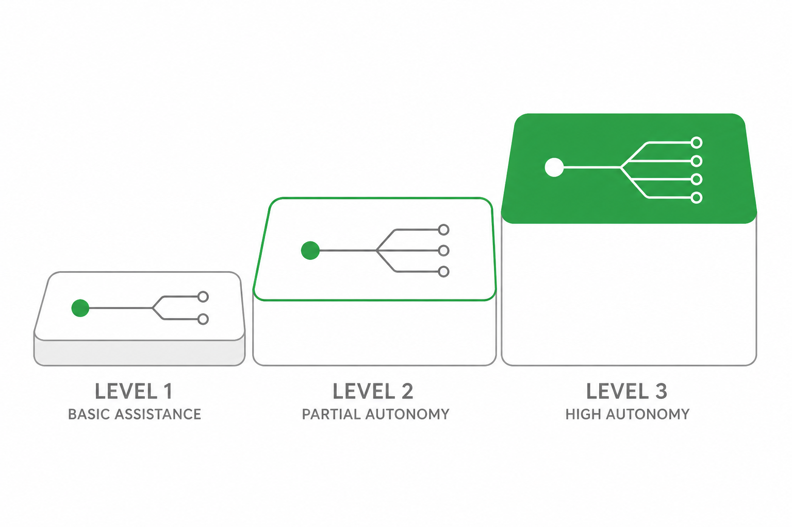

BWF · Kanban · Autonomy · Handoff · Harness
b3rys 팀이 과제를 받아 끝까지 닫는 실행 체계. 6단계 BWF, 3컬럼 칸반, 자율주행 3단계, 핸드오프 회수, Harness 병렬 실행, Proposal 거버넌스까지 continuation guard(진행 지속 장치)로 연결한다.
BWF(b3os workflow, 팀 기본 과제 수행 흐름) — GD가 컨펌한 실행·위임 과제를 끝까지 닫는 6단계 사이클.
Tasks 칸반(`task` DB 정본)은 PM 툴이 아니라 현황판. 3컬럼 plan / doing / done.
실행 단계 기본값은 주행모드. harness 확장 개념과 1:1로 연결된다.

handoff(인수인계)는 보낸 것으로 끝나지 않는다. 성공 기준은 '전달 완료'가 아니라 회수 완료.
정해진 시각에 담당자를 깨우고, 한 턴 안에서 루프를 닫는 반복 운영 사이클. 스킬: b3os-workloop
한 팀원이 sub agent(보조 에이전트)를 병렬로 띄워 분리 가능한 일을 나눠 처리하는 실행 방식. 스킬: b3rys-harness
제안이 draft 에서 accepted/rejected 로 가는 상태기계. 3테이블: proposal proposal_review proposal_decision_log
교훈을 팀 정책으로 승격시키는 금요일 루프. 메인 목적은 팀 정책·피드백 루프의 자가발전.
이 페이지에서 쓰인 핵심 용어 정리.